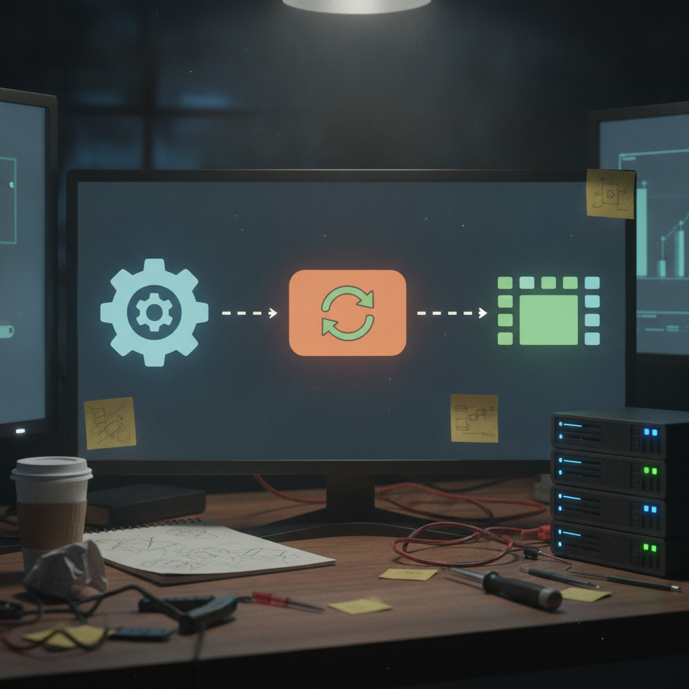

FlipThisVideoMaker: The Render Pipeline Just Got a Lot Sturdier
FlipThisVideoMaker is my attempt at making video generation that is actually affordable and easy to make, instead of something that requires a rendering rig and a patience for pain. It is open source and I have been building it in public on GitHub. The last 24 hours were a solid chunk of work on the part of the project that matters most: making the render pipeline something you can trust.
What just shipped
The biggest theme is the local video studio itself. I built out a validated local video studio and wired render profiles into the mock pipeline, so the settings you choose for a render actually flow through the system in a predictable way. Render profiles now persist, and if a render hits a typed out-of-memory error, the system can recover instead of just dying and losing your progress.
On top of that, I hardened cancellation and worker scheduling. That sounds boring, but it means when you cancel a job, it actually stops cleanly and the worker queue keeps its shape instead of getting confused. There was also a fix for a real bug: the SQLite directory needed to exist before migrations ran, which would have broken fresh installs.
I also added a checkpoint for media QA and the browser workflow, and wrote up a docs handoff marking this as a finalization phase for the project. That handoff note is basically me leaving myself a trail of breadcrumbs for what comes next.

Why it matters
Affordable, easy video generation only works if the pipeline underneath it does not fall over the first time someone tries something unusual. Persisted render profiles mean your settings survive between sessions. OOM recovery means a crash does not mean starting over. Clean cancellation and worker scheduling mean the system behaves the same way under stress as it does in a demo. None of this is flashy, but it is the difference between a tool people can rely on and a tool that only works when nothing goes wrong.
Rick's take
This is the part of building a tool that nobody sees in a screenshot, but it is the part I actually enjoy the most. Getting cancellation and worker scheduling to behave, getting crash recovery working, fixing the SQLite path bug before it bit anyone: that is the unglamorous scaffolding that makes everything else on top of it feel solid. Calling this a finalization phase in the docs is me being honest with myself about where the project is. It is not done, but it is starting to hold its shape.
What's next
With the finalization phase handoff written down, the next stretch is about tightening the media QA and browser workflow checkpoint that just landed, and making sure the render profile and recovery work holds up under real use rather than just the mock pipeline. I will keep posting updates as that gets tested out.